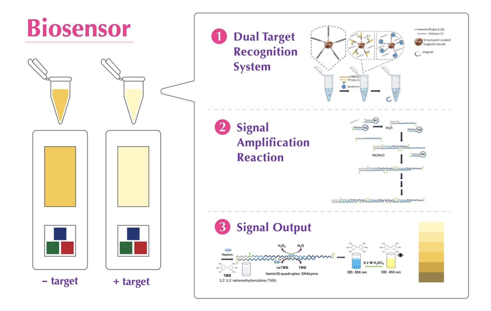
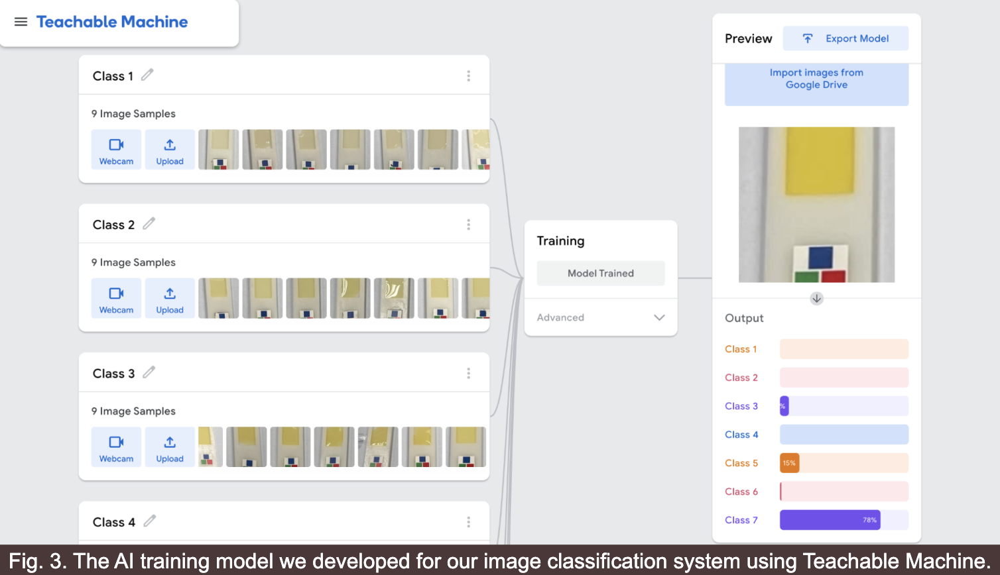
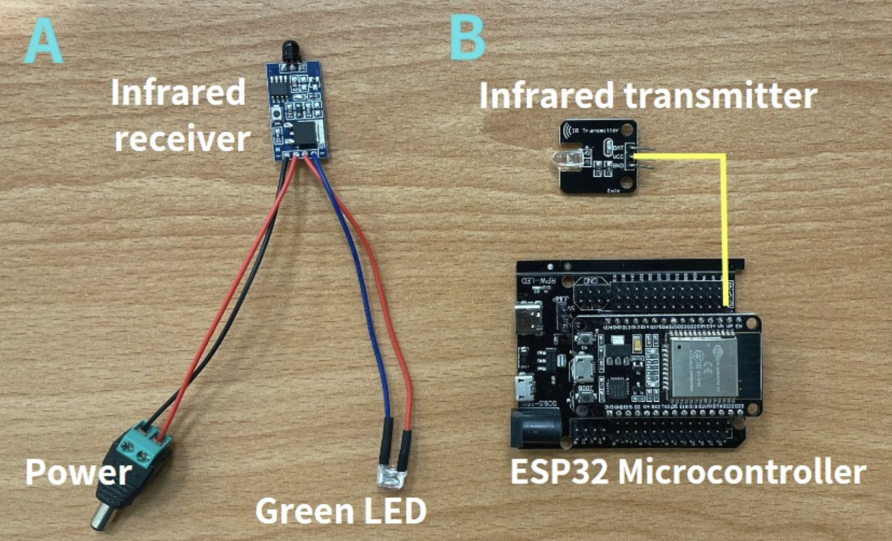
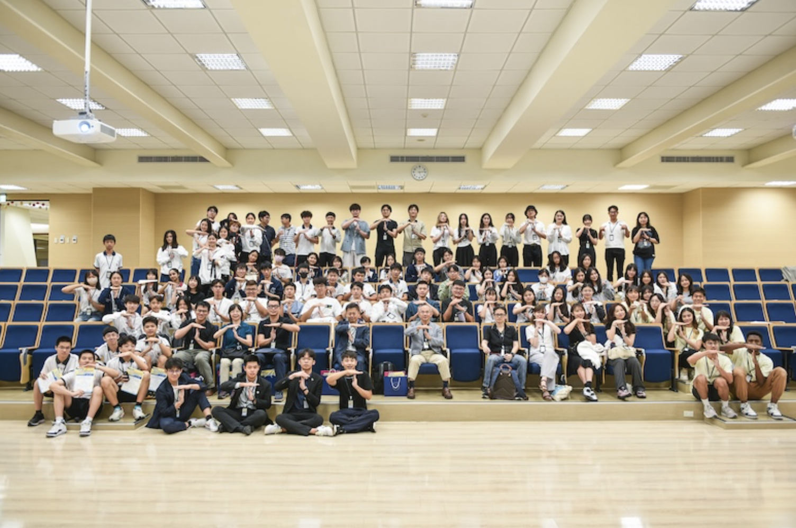

01 — OVERVIEW
Early Cardiovascular Disease Detection
As part of the 2024 International Genetically Engineered Machine (iGEM) competition, our team developed a portable biosensing system designed to support early cardiovascular disease detection. The system combined biological biomarkers, smartphone-assisted analysis, and hardware concepts for controlled drug delivery.

02 — THE SYSTEM
From Detection to Treatment
Our project explored an integrated diagnostic workflow using miR-128 and troponin I as cardiovascular disease biomarkers. The concept connected biosensor testing with smartphone-assisted analysis and a smart-brace system designed for controlled lumbrokinase delivery.
Patient Sample → Biosensor → Smartphone Analysis → Result → Smart Brace

03 — HARDWARE DESIGN
Testing Plate
The project included a portable testing plate designed to support smartphone-based analysis of biosensor results. An RGB reference panel was incorporated into the design to help account for differences in lighting conditions and smartphone cameras during image analysis.
Infrared Transmitter
An ESP32-based infrared transmitter prototype was developed to connect the smartphone application with the smart-brace concept. The system demonstrated how diagnostic results could potentially communicate with a wearable treatment device.

04 — HUMAN PRACTICES
2024 Taiwan iGEM Seminar (TGEM)
As the Human Practice team lead, I contributed to organizing TGEM, a two-day synthetic biology seminar and mock competition hosted at Kang Chiao International School Linkou Campus. The event brought together more than 100 attendees from universities and high schools across Taiwan to exchange research, receive feedback, and prepare for the iGEM competition.
Participating teams represented National Taiwan University, National Tsing Hua University, Chung Shan Medical University, National Chung Hsing University, National Chung Cheng University, Formosas 101, Xiugang Kang Chiao, and Linkou Kang Chiao.

05 — RESULT
Bronze Medal
Our team received a Bronze Medal at the 2024 International Genetically Engineered Machine (iGEM) competition.